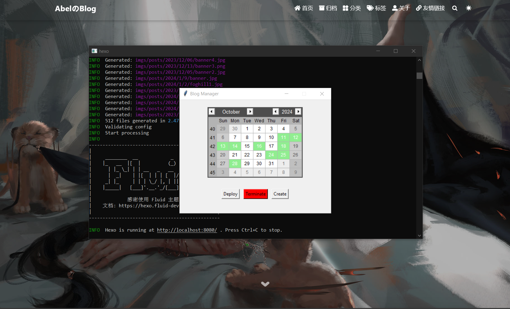

Python - Tkinter
环境准备
建议在开始尝试 Tkinter 的时候先创建一个虚拟环境进行测试，首先先用 Conda 创建一个虚拟环境：
1 | |
其中 python=3.8 是可选项，也可以指定下载其他的 Python 版本。
然后激活环境：
1 | |
安装 Pip ，因为有些包不能通过 Conda 安装，而这个时候就需要使用 Pip，这里要注意一个点，要首先激活 Conda 的环境，然后在激活的虚拟环境中再通过 Conda 重新下载一个 Pip[1]，否则这时的虚拟环境中是不存在 Pip 的，所以如果直接执行 Pip 的命令会对原本的环境生效。
1 | |
这个时候通过查看 Conda 和 Pip 的环境可以查看是不是在虚拟环境中：
1 | |
如果结果和原本环境中的输出是不一样的，那么就是成功创建虚拟环境并且激活虚拟环境了。
Tkinter 是什么[2]
tkinter 是 Python 标准的GUI库，可以使用这个库快速地创建GUI应用。
如何将 Python 文件编译成 .exe 文件[3]
安装编译工具
pyinstaller1
pip install pyinstaller在文件路径下执行编译命令，其中
-w参数是为了使得dos窗口不会随着tkinter窗口出现1
pyinstaller -F -w demo.py #demo.py是待编译的代码文件名编译完成后一般会在当前文件夹中生成一个
dist的文件夹，一个build文件夹和 一个demo.spec文件，编译后的.exe文件就在dist文件夹中。
编译后 .exe 文件太大的问题
原因是在编译时会把 Python 环境及库一起打包到 .exe 文件中，如果当前的 Python 环境中安装了很多的包，那么就会把所有的库带上，导致编译后的 .exe 文件过大。
因此解决方案就是为该文件单独创建相应的 Python 虚拟环境，只安装要编译 Python 文件所依赖的库。具体步骤如下：
安装
virtualenv用于创建虚拟环境1
pip install virtualenv创建一个虚拟环境，建议将这个虚拟环境放在需要打包的
Python文件夹中，便于后面的处理1
virtualenv py3exe_env #自定义命名虚拟环境的名称，这里是py3exe_env创建完成之后进入到该目录
1
cd py3exe_env/Script在该目录下找到
activate.ps1并执行1
activate.ps1然后在该虚拟环境下安装要编译的文件需要依赖的
Python库，当然也要重新安装pyinstaller。1
2pip install pyinstaller
pip install conda #比如这里安装conda然后在该虚拟环境中回到要编译的文件目录下输入编译命令：
1
pyinstaller -F -w test.py #运行时不出现dos命令窗口
如何给 Tkinter 添加自定义图标
首先将要设置为图标的图片转换成 .ico 的格式，很多在线网站都能实现[4]。然后在运行 pyinstaller 之前给它加上一个参数[5]：
1 | |
比如你的 .ico 文件是 icon.ico 那么完整命令应该是：
1 | |
还有一种方法是利用 Tkinter 的方法[6]：
1 | |
还有一种方法是将图标硬编码进代码中[7]，首先获取图标的二进制数据：
1 | |
输出的字符串即为图标文件的二进制数据。假设输出为b'abcdefg'。然后利用获取的二进制数据，可以写出代码：
1 | |
这里注意一个点，PIL 已经不再维护了，所以需要 pip install Pillow，接口的代码是一样的。
Tkinter 快速入门
Tkinter 实战
用 Tkinter 实现了一个博客管理器，主要用于管理我自己的博客文章，源代码和程序仓库请点我。

References
- conda虚拟环境使用pip下载包到当前环境的两种方法 - Python技术站 (pythonjishu.com) ↩︎
- 【python】tkinter程序打包成exe可执行文件 全流程记录（windows系统）_tkinter打包exe-CSDN博客 ↩︎
- Tk图形用户界面(GUI) — Python 3.12.2 文档 ↩︎
- 文件转换器 - FreeConvert.com ↩︎
- 如何给python生成的exe程序换图标 | PingCode智库 ↩︎
- Tkinter 修改应用程序和任务栏图标 – Python/Tkinter|极客笔记 (deepinout.com) ↩︎
- 硬编码tkinter的图标而不依赖于外部文件（不生成临时图标文件！）_python tinker logo可以不依赖外部文件吗-CSDN博客 ↩︎